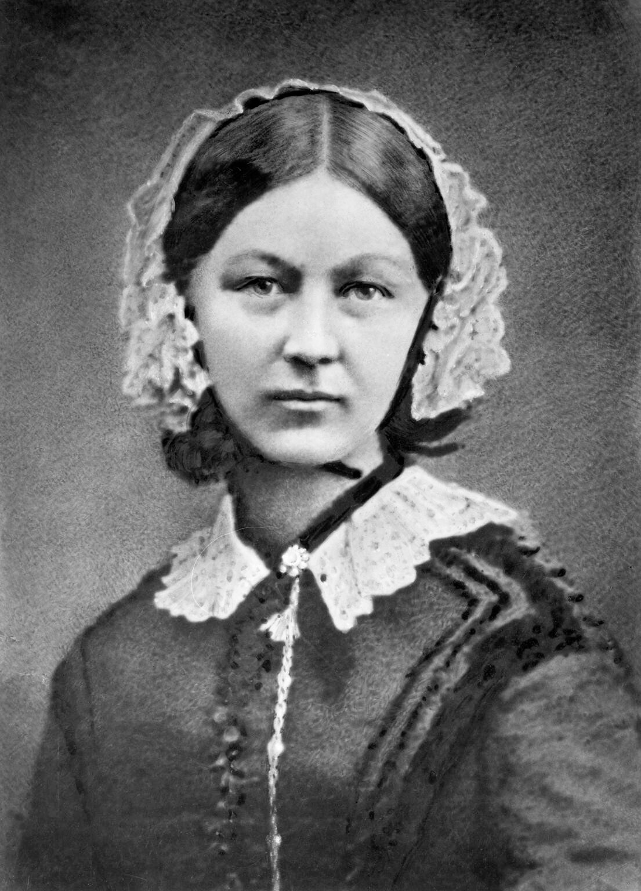

Most maidens would want a job to get good wages ; but not Nightingale.(12 May 1820-13 August 1910)
Telling her parents William and Fanny Nightingale that she wished to fly to Germany to study nursing did not fit into their fist not because they hadn't had the finance quite the contrary but because they mostly wanted her to pursue something that kept her near her nest.
They had to give in to her grit though and finally she made it to Germany, studied nursing, became one, and served as manager and trainer of nurses during the Crimean War, in which she organised care for wounded soldiers at Constantinople.
She rose to the realm of the heavens when she was spotted even at the nights awake and alone tending these injured men under the light of a lamp.
Nightingale's wikipedia page"Villakkenthiya Vanitha" is her sobriquet in malayalam.
| FIELDS | FILED |
|---|---|
| Hospital hygiene and sanitation, statistics | Pioneering modern nursing, Polar area diagram |
Mother Theresa is fondly foretold as the Indian Florence Nightingale. Violence , violence , violence. You might not like it. But irrespective of your avoidance it vindicates its vileness; we remember Vandana Das. Stand and stay among the stars, sister.